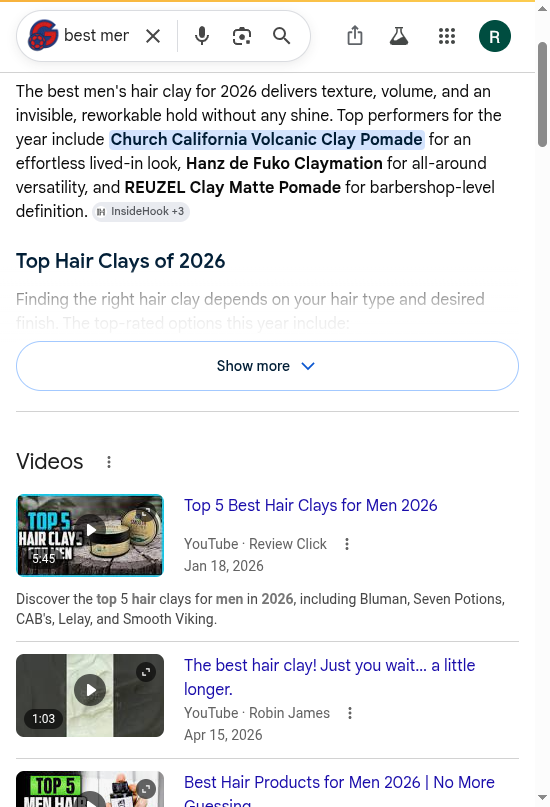

Blackwell Enterprises
An external audit of how AI engines and search see Hanz de Fuko today. And what we would do about it.
We graded Hanz de Fuko on five dimensions of how AI engines and search treat the brand. Each dimension is scored 0 to 100 against observed behavior across AI answer engines, the category listicles those engines cite, third-party reputation sources, the brand's own indexed pages, and the agent-commerce surface. Competitor scores are our estimates from the same public signals. Composite is the simple average.
Hanz de Fuko is in good shape. AI engines already recommend it by name, the hero product's rating is machine-readable, and the brand runs the full agent-commerce stack. Claymation is named in five of the six engines we tested, and is ChatGPT's outright top pick for "best men's hair clay." The headroom is Discoverability (66): the homepage carries no Organization or Brand entity, so the brand the engines recommend has no machine-readable identity to resolve to, and Hanz holds no claimed reputation profiles. The fixes are entity-level, not a rebuild.
| Dimension | Hanz de Fuko | Baxter | Am. Crew | Reuzel | What it measures |
|---|---|---|---|---|---|
| Discoverability | 66 |
68 | 70 | 80 | Entity presence, agent discovery files, crawler access, third-party listings |
| Quotability | 74 |
70 | 80 | 70 | Schema depth, structured product and policy data, accuracy in machine-readable form |
| Recommendability | 78 |
76 | 80 | 76 | Inclusion in AI category recommendations and the listicles engines cite |
| Transactability | 88 |
80 | 80 | 90 | UCP and MCP endpoints, payment handlers, agent-readable pricing |
| Reputation | 74 |
74 | 78 | 78 | Review aggregator presence and rating, sentiment, links from the entity to that reputation |
| Composite | 76 (B) | 74 (C) | 78 (B) | 79 (B) | Hanz sits mid-pack in a strong set. It wins on recommendation and the agent layer; it trails on the homepage entity, where the brand engines name has no structured identity behind it. |
Grading scale: A 90+, B 75 to 89, C 60 to 74, D 50 to 59, F below 50. Competitor scores are estimates from observed public signals, not a full audit of those brands. Reuzel's column is from our full audit of that brand. Method and queries in the methodology section.
Hanz de Fuko is a well-regarded premium men's styling brand: Quicksand and Claymation are category staples, sold direct and through Amazon, Ulta, and Sephora, on a Shopify store that runs the full agent-commerce stack. Asked for the best men's hair clay, AI engines name Hanz by name, and ChatGPT calls Claymation "the best all-around men's hair clay." The hero product's rating is even server-rendered, which is a step ahead of most of the set. The gap is upstream of all of it: the homepage carries no machine-readable brand entity, so the brand the engines recommend has nothing structured to anchor to, and the reputation lives on channels Hanz has not claimed.
Six findings, ordered by leverage. The last two are strengths.
WebSite and SearchAction JSON-LD: no Organization, no Brand. Engines name Hanz de Fuko, but nothing on the homepage tells a machine what the brand is, who makes it, or how its reputation attaches. This is the discoverability gap that caps everything else.Product, AggregateOffer, and AggregateRating in the raw HTML, which is good. It also serves two Product blocks and two AggregateRating blocks on the same page, the kind of duplication that lowers an engine's confidence in which record is canonical.AggregateRating in the server HTML. A crawler reading the Quicksand page directly sees the rating. This is the asset to anchor the entity work to.agents.md, and llms-full.txt, all returning 200, with every AI crawler reaching the site. An AI agent can find and transact today.Finding 1 of 6 · High severity
AI engines name Hanz de Fuko when a shopper asks for the best hair clay. But when an engine tries to build a record of what "Hanz de Fuko" actually is, who makes it, what it is rated, and how its reputation attaches, the homepage gives it almost nothing. This is the gap that caps the whole scorecard.
// hanzdefuko.com homepage JSON-LD, June 25, 2026 Homepage structured data: WebSite + SearchAction // present Organization entity: none // no name, logo, founder, or sameAs links Brand entity: none Title and meta description: present, descriptive · h1 in server HTML: 1
Why it matters
The title and the on-page content are fine for a human. What is missing is the structured identity a machine uses to decide that the brand the engines recommend, the products on the PDPs, the 4.x ratings on Amazon, and the YouTube reviews are all the same entity. With no Organization and no sameAs, every reputation signal floats unattached, and the brand is recommended in spite of its own homepage rather than because of it. The good news under this: every AI crawler reaches the site cleanly. GPTBot, ClaudeBot, PerplexityBot, OAI-SearchBot, Google-Extended, Amazonbot, and Bingbot each returned a 200. The front door is open; there is just no identity card inside it.
The fix. Server-rendered Organization and Brand schema on the homepage, with sameAs links to the brand's retail, social, and review profiles, so the engines have one entity to resolve every signal to. Theme-level and mechanical, and it is the anchor the rest of the findings attach to.
Finding 2 of 6 · Strength with one gap
This is where most brands fail and Hanz succeeds. We ran the full six-engine battery, two passes each (from the model's memory with web search off, then with live retrieval on), on "best men's hair clay 2026." Logged-in engines ran in incognito or a temporary chat so saved history could not inflate the result. Claymation is named in five of the six engines, and is ChatGPT's outright top pick.
| Engine (clean session) | From memory (search off) | Live web retrieval (search on) |
|---|---|---|
| ChatGPT (Temporary Chat) | top pick: Claymation | named ($28, matte, strong hold) |
| Claude | named | named with Reuzel, Layrite |
| Gemini | named | named |
| Copilot (guest) | retrieval only | named with Layrite, Baxter |
| Google AI Overview | retrieval only | Claymation, top performer |
| Perplexity (Incognito) | retrieval only | not named |
Google AI Overview, live retrieval: "best men's hair clay 2026"
"The best men's hair clay for 2026 delivers texture, volume, and an invisible, reworkable hold. Top performers include Church California Volcanic Clay Pomade, Hanz de Fuko Claymation for all-around versatility, and REUZEL Clay Matte Pomade."

Google AI Overview names "Hanz de Fuko Claymation for all-around versatility" among the year's top performers. ChatGPT, asked from memory, goes further and calls Claymation the best all-around men's hair clay. Captured June 25, 2026.
The one gap
The single clean miss is Perplexity, run in incognito so no saved history could help or hurt. It named Layrite, American Crew, and Suavecito and left Hanz out. Perplexity leans hard on third-party category guides, so the brand is under-represented in the specific roundups it cites. That is a narrow, addressable gap, not a reputation problem: every other engine, including the from-memory passes, knows Claymation well.
The fix. Recommendability is already strong; the lever is source authority in the guides Perplexity reads, plus the entity work in finding 1 so the recommendation resolves to a brand the engine can identify and trust.
Finding 3 of 6 · Medium severity
The good news first: the hero product page serves its rating in the raw HTML, which most of the set does not. The issue is that it serves it twice, along with two product records, on the same page. Duplication makes an engine guess which record is canonical, and guessing lowers confidence.
// hanzdefuko.com Quicksand PDP, structured data, June 25, 2026 Product × 2 // two Product blocks on one page AggregateRating × 2 // two rating blocks on one page AggregateOffer present // price range, server-rendered
Why it matters
A single, clean Product with one AggregateRating is what an engine wants: one unambiguous record to read the price, the rating, and the availability from. Two of each, even with the same values, is the kind of low-grade noise that makes an engine hedge on which to trust, and it can split or dilute how the rating is attributed. This is a deduplication, not a rebuild: the data is right, there is just too much of it.
The fix. Collapse the PDP to a single Product block with one AggregateRating and the AggregateOffer, and tie it to the homepage Organization from finding 1. We deliver the corrected payload; the brand applies it in the theme.
Finding 4 of 6 · Medium severity
Hanz has a genuine, engaged reputation. The problem is the same shape as the entity gap in finding 1: the proof exists, but it is not claimed on the channels engines weight, and none of it is tied to a brand entity an engine can resolve.
// Hanz de Fuko reputation corpus, live reads, June 25, 2026 Amazon (Quicksand and others): 4.3 to 4.6 / 5 Reddit: active (Claymation how-to threads, "is it still worth?") YouTube: deep (Quicksand reviews, creator budget breakdowns) Trustpilot business profile: unclaimed (1 review) BBB profile: none
Why it matters
Amazon and the creator ecosystem rate Hanz well, and the brand is a known name in men's grooming discussion. But Trustpilot, a source several engines weight for trust, sits unclaimed with a single review, there is no BBB profile, and because the homepage has no Organization with sameAs links, an engine cannot confidently connect the strong Amazon and YouTube signal back to the brand. The reputation is real; it is unmanaged at exactly the layer that decides trust.
The fix. Claim and seed the Trustpilot profile, and link the retail and social reputation through the homepage sameAs from finding 1, so engines attribute the existing strong signal to the brand. Claiming the profile is the brand's to execute; the entity linkage is ours to deliver.
Finding 5 of 6 · Strength to build on
This is the asset to anchor the entity work to. Where many grooming brands, Reuzel included, lock their rating in a JavaScript widget a crawler cannot read, Hanz serves its AggregateRating in the server HTML. A crawler reading the Quicksand page directly sees the rating without running any scripts.
// hanzdefuko.com Quicksand PDP, read as ClaudeBot reads it aggregateRating in raw HTML: present // the rating is visible without JavaScript Contrast, Reuzel PDP raw HTML: no aggregateRating // rating hidden in a JS widget
Why it matters
The rating is the single fact that most drives a recommendation, and Hanz already exposes it in the form engines read. That is half of what wins the recommendation, and the brand has it. The reason it is filed as a strength with a fix rather than solved outright is finding 3: the rating is served twice, and finding 1: it is not linked to a brand entity. Clean up the duplication and anchor it to an Organization, and this becomes a clean, citable, machine-readable rating, which is exactly what pulls a brand into the answers it is not yet named in.
The lever. Keep the server-rendered rating, deduplicate it (finding 3), and link it to the homepage entity (finding 1), so the head start Hanz already has converts into the attribution it is missing.
Finding 6 of 6 · Strength to build on
For most brands this is the hardest dimension. Hanz scores high here because it is on Shopify and the stack is switched on. We verified the endpoints directly.
// hanzdefuko.com agent surface, June 25, 2026 /.well-known/ucp live (UCP merchant profile) agents.md · llms-full.txt 200 (agent instructions, full content map) sitemap_agentic_discovery.xml present AI crawler access: 200 (GPTBot, ClaudeBot, PerplexityBot, OAI-SearchBot, Google-Extended, Amazonbot, Bingbot)
Why it matters, and the honest caveat
An AI agent acting for a shopper can discover the store, read the catalog, and move toward a buyer-approved checkout. The caveat is the same as for any Shopify brand: this is a platform advantage rather than a custom build, and the close competitors run the same stack. There is nothing to fix here. The point is to keep the data the agents read, the brand entity and the deduplicated rating, correct, which findings 1, 3, and 5 handle, so an agent that arrives reads a clean, citable product.
The lever. Keep the Shopify agent layer current, and make the upstream entity and rating legible (findings 1, 3, 5) so engines and agents both resolve cleanly to the brand.
The same machine-readable signals across the four brands, all checked the same day. Hanz is recommended like the rest and exposes its rating, which Reuzel does not. Where it trails is the homepage entity, which none of this set does especially well, and the claimed reputation profiles.
| Signal | Hanz de Fuko | Baxter | Am. Crew | Reuzel |
|---|---|---|---|---|
| Named in AI category answers | yes (top in ChatGPT) | yes | yes | yes |
| aggregateRating in product schema | yes | partial | yes | none |
| Homepage Organization entity | none | partial | partial | yes |
| Live agent stack (ucp + agents.md) | yes | yes | yes | yes |
| Claimed Trustpilot profile | no | n/a | n/a | no |
The set is strong across the board: every brand here is named by the engines and runs the agent stack. Hanz's edge is that its rating is already machine-readable, which Reuzel's is not. Its one clear deficit is the homepage brand entity, where it trails Reuzel. Competitor scores are estimates from the same public signals; the Reuzel column is from our full audit of that brand.
Hanz de Fuko does not need a rebuild. It needs a short entity sprint. Phase 1 is a 30-day pass that gives the brand a machine-readable identity on its homepage, deduplicates the product schema, and links the reputation the brand already earns. Phase 2 is ongoing AI visibility work that holds the position and closes the one engine where Hanz is not yet named. After Phase 1 we measure against benchmarks set together and decide whether Phase 2 makes sense.
Phase 1 · 30 days
Four remediations, ranked by leverage, each closing a finding above.
Organization and Brand schema on the homepage, with sameAs links to the retail, social, and review profiles, so the brand engines name has a machine-readable identity (finding 1)Product with one AggregateRating and the AggregateOffer, tied to the homepage entity (findings 3, 5)sameAs, and a spec to claim and seed the Trustpilot profile (finding 4)Organization and Brand schema validator-clean with a populated sameAs; the Quicksand PDP reduced to a single Product and one AggregateRating; and movement toward presence in the Perplexity category answer. $1,000 all-in for Phase 1, refunded in full if the benchmarks are not met.What is ours, what is yours, what the engines decide
We produce the exact schema payloads, the entity and sameAs linkage, the PDP deduplication spec, the category-source map, and the re-test that measures movement. Editing the live theme, claiming the Trustpilot profile, and any CMS changes are inside Hanz de Fuko's own systems that the brand executes; we hand over the precise specs and verify the result. Where an outcome depends on a third party, such as a publisher updating a roundup, we flag it and do not promise it.
Phase 2 and beyond
Phase 1 gives the brand a machine-readable identity. Phase 2 holds and extends it: continuous AI behavior monitoring per dimension with drift alerts; an entity establishment campaign so the engines resolve "Hanz de Fuko" cleanly with its rating and reputation; and earning Hanz into the category sources Perplexity cites, the one engine where it is not yet named. Phase 2 scope and pricing are discussed after Phase 1 benchmarks land.
Every finding came from running specific tools and queries against public surfaces, in an order designed to separate what Hanz de Fuko publishes from what machines actually do with it. It is all externally reproducible.
Truth table, frozen first
Before querying any engine, we pulled Hanz de Fuko's own machine surface directly: homepage and product <head> and JSON-LD, robots.txt, agents.md, llms-full.txt, /.well-known/ucp, the agentic-discovery sitemap, and the product feed (22 products on the first page, 8 collections). AI-crawler access was tested by fetching a product page under the GPTBot, ClaudeBot, PerplexityBot, OAI-SearchBot, Google-Extended, Amazonbot, and Bingbot user agents; every one returned a 200. The homepage entity gap in finding 1 and the duplicated product schema in finding 3 came from reading the raw HTML as a crawler reads it.
AI behavior and recommendability
We ran the full six-engine battery (ChatGPT, Perplexity, Gemini, Claude, Google AI Overview, Microsoft Copilot) in headed browser sessions, two passes each: from the model's memory with web search off, then with live retrieval on. Logged-in engines were run in incognito or temporary chat (ChatGPT Temporary Chat, Perplexity Incognito) so saved history did not bias the result; Copilot ran as a guest. Each engine and pass was captured to a screenshot. Claymation was named in ChatGPT (top pick), Claude, Gemini, Copilot, and Google AI Overview; the one miss was Perplexity in incognito, noted in finding 2.
Reputation corpus
We pulled Hanz de Fuko's reputation live from Amazon, Reddit, YouTube, and Trustpilot, and checked whether any of it is linked to a brand entity. The 4.3 to 4.6 Amazon ratings and the active Reddit and YouTube discussion are real; the unclaimed Trustpilot profile, the missing BBB profile, and the absent homepage Organization are findings 1 and 4. Retailer figures are live page reads and move over time.
Competitive set
Baxter of California, American Crew, and Reuzel were checked the same day on the same signals (homepage and product schema, AI category presence, agent endpoints). Their dimension scores are estimates from those public signals, except Reuzel, which is from our full audit of that brand, and are labeled as such on the scorecard.
robots.txt, sitemap.xml, agents.md, llms-full.txt, /.well-known/ucp, and /products.json. Reputation and recommendability findings are reproducible by running the same public queries. Counts pulled June 25, 2026.